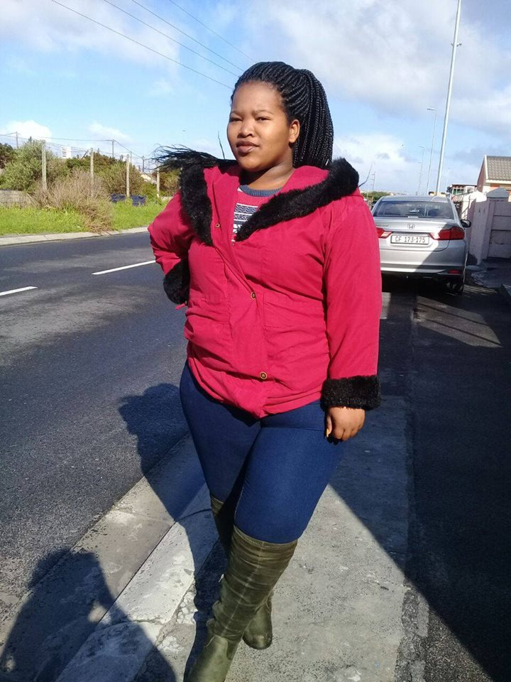
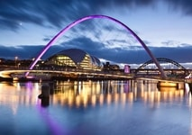

Axola Lose
Newcastle
I would like to vist Newcastle because its a great city it has a good vibe.
I finded out more about this city when I watched a reality show called Geordie Shore.
A foreign language
I like the country because the capital city of it is Paris (City of love).
| English | French |
|---|---|
| My name | Je m'appelle |
| Im hungry | Qu'est - ce que j'ai faim |
| Goodbye | Au revoir |
Historic places in Cape Town
 The House of Parliament of South Africa are situated in Cape Town.
The buildings consits of three main sections the original building,
The House of Parliament of South Africa are situated in Cape Town.
The buildings consits of three main sections the original building,was completed in 1884 and conditions constructed in the 1902 and 1980s.
 A cape town landmark, the Castle of Good Hope, is a prime example of a "star fort".
Built between 1666 and 1679 by the Dutch East India Company.
A cape town landmark, the Castle of Good Hope, is a prime example of a "star fort".
Built between 1666 and 1679 by the Dutch East India Company. It's the oldest existing colonial building in South Africa. It's position marks the original shoreline
before years of land reclamation changed the Table Bay costline.
 Cape Town city hall is a large Edwardian building in cape town city centre which was built in 1905.
Cape Town city hall is a large Edwardian building in cape town city centre which was built in 1905.It is located on the Grand Parade to the west of the west of the castle and
is built from honey - coloured oolitic limestone imported from Bath in England.